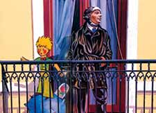
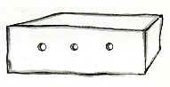

|  |
LePetitPrince
Antoine de Saint-Exupéry
But du TP du
01/05/201:
Traitement d'un texte franco/hongrois avec XPath / XSLT / XQuery
Auteurs:
Moi et Mon binome
(B3100)
Email du responsable:
text
|
Début du texte:
J'ai ainsi vécu seul, sans personne avec qui parler véritablement, jusqu'à une panne dans le désert du Sahara, il y a six
ans. Quelque chose s'était cassé dans mon moteur, et comme je n'avais avec moi ni mécanicien, ni passagers, je me préparai à essayer
de réussir, tout seul, une réparation difficile. C'était pour moi une question de vie ou de mort. J'avais à peine de l'eau à boire pour huit jours.
Így éltem magányosan, anélkül, hogy igazában bárkivel is szót érthettem volna, míg egyszer, hat esztendővel ezelőtt, kényszerleszállást
nem kellett végeznem a Szaharában. Valami eltörött a motoromban. És mivel se gépészem nem volt, se utasom, magamnak kellett nekilátnom, hogy zöld ágra vergődjem
valahogyan, és kijavítsam a súlyos hibát.Élet és halál kérdése volt ez számomra.Alig egy hétre való ivóvizem volt.
Le premier soir je me suis donc endormi sur le sable à mille milles de toute terre habitée. J'étais bien plus isolé qu'un naufragé sur un rideau au milieu de l'océan. Alors vous imaginez ma surprise, au levé du jour, quand une drôle de petite voix m'a réveillé. Elle disait:
Ott dőltem álomra az első este a homokon, ezermérföldnyire minden lakott helytől.Elhagyatottabb voltam, mint tutaján a hajótörött az óceán közepén.Elképzelhető hát, mennyire meglepődtem, amikor hajnalban egy fura kis hang ébresztett föl. Azt mondta:
 |
S'il vous plaît... dessine-moi un mouton!  |
|
Hein! |
|
Dessine-moi un mouton... |
|
|
|
Légy szíves, rajzolj nekem egy bárányt! |
|
Micsoda? |
|
Rajzolj nekem egy bárányt... |
|
J'ai sauté sur mes pieds comme si j'avais été frappé par la foudre. J'ai bien frotté mes yeux. J'ai bien regardé. Et j'ai vu un petit bonhomme tout à fait extraordinaire qui me considérait gravement. Voilà le meilleur portrait que, plus tard, j'ai réussi à faire de lui. Mais mon dessin,bien sùr, est beaucoup moins ravissant que le modèle. Ce n'est pas de ma faute. J'avais été découragé dans ma carrière de peintre par les grandes personnes, à l'age de six ans, et je n'avais rien appris
à dessiner, sauf les boas fermés et les boas ouverts.
Fölugrottam, mintha villám csapott volna le mellettem. Megdörgöltem a szememet, aztán jól kimeresztettem.És egy apró emberkét láttam, egy teljességgel rendkívüli kis emberkét, amint komoly figyelemmel szemlél.Itt a legjobb kép, amit később csinálnom sikerült róla. Csakhogy az én rajzom kétségkívül sokkal kevésbé elragadó, mint amilyen
a mintája volt. Igaz, nem az én hibámból. Mert ami festői pályafutásomat illeti, attól már hatesztendős koromban elvették a kedvemet a fölnőttek,
így aztán nem is tanultam meg rajzolni, kivéve a csukott meg a nyitott óriáskígyókat.
Je regardai donc cette apparition avec des yeux tout ronds d'étonnement. N'oubliez pas que je me trouvais à mille milles de toute région habitée. Or mon petit bonhomme ne me semblait ni égaré, ni mort de fatigue, ni mort de faim, ni mort de soif, ni mort de peur. Il n'avait en rien l'apparence d'un enfant perdu au milieu du désert, à mille milles de toute région habitée. Quand je réussis
enfin de parler, je lui dis:
Ámulattól kerek szemmel néztem hát a különös tüneményt. Ne feledjük el: ezer mérföldre voltam minden lakott vidéktől. Emberkémen pedig semmi jele nem volt annak, mintha eltévedt volna, vagy halálosan fáradt, halálosan éhes, halálosan szomjas
lenne, esetleg halálosan félne. Egyáltalán nem úgy festett, mint egy szerencsétlen gyerek, aki eltévedt a sivatagban, ezermérföldnyire minden lakott helytől.
Mikor végre szavamra leltem, azt kérdeztem tőle:
|
Mais qu'est-ce que tu fais là? |
|
|
|
De hát... hogy kerülsz te ide? |
|
Et il me répéta alors, tout doucement, comme une chose très sérieuse:
Erre szelíden, és mintha valami nagyon komoly dolgot kérne, megismételte:
|
S'il vous plaît... dessine-moi un mouton... |
|
|
|
Légy szíves, rajzolj nekem egy bárányt... |
|
Quand le mystère est trop impressionnant, on n'ose pas désobéir. Aussi absurde que cela me semblaît à mille milles de tous les endroits habités et en danger de mort, je sortis de ma poche
une feuille de papier et un stylographe. Mais je me rappelai alors que j'avais surtout étudié la géographie, l'histoire, le calcul et la grammaire et je dis au petit
bonhomme (avec un peu de mauvaise humeur) que je ne savais pas dessiner. Il me répondit:
Ha valami nagyon lenyűgözően rejtélyes, az ember nem meri megtenni, hogy ne engedelmeskedjék. Akármilyen képtelenségnek találtam, hogy ezer mérföldre minden lakott helytől és ráadásul halálos veszedelemben: elővettem
a zsebemből egy darab papirost meg a töltőtollamat. Hanem akkor eszembe jutott, hogy én főként földrajzot, történelmet, számtant és nyelvtant tanultam, és egy kicsit kedvetlenül
közöltem az emberkémmel, hogy nem tudok rajzolni.
|
Ca ne fait rien. Dessine-moi un mouton. |
|
|
|
Annyi baj legyen - felelte. - Rajzolj nekem egy bárányt. |
|
Comme je n'avais jamais dessiné un mouton je refis, pour lui, un des deux seuls dessins dont j'étais capable. Celui du boa fermé. Et je fus stupéfait d'entendre le petit bonhomme me répondre:
Minthogy bárányt soha életemben nem rajzoltam, papírra vetettem neki a két rajz közül, amire egyáltalán képes voltam, az egyiket:
a csukott óriáskígyót.De hogy elképedtem, mikor az emberke azt mondta rá:
|
Non! Non! Je ne veux pas d'un éléphant dans un boa. |
|
Un boa c'est très dangereux, et un éléphant c'est très encombrant. |
|
Chez moi c'est tout petit. |
|
J'ai besoin d'un mouton. |
|
Dessine-moi un mouton. |
|
|
|
Nem! Nem! Nem elefántot akarok óriáskígyóban! |
|
Az óriáskígyó nagyon veszedelmes, az elefánt meg olyan behemót nagy. |
|
Nálam odahaza minden apró. |
|
Nekem bárányka kell. |
|
Rajzolj nekem egy bárányt. |
|
Alors j'ai dessiné. Il regarda attentivement, puis:
Hát erre rajzoltam egyet. Figyelmesen szemügyre vette, aztán:
|
Non! Celui-là est déjà très malade. |
|
Fais-en un autre. |
|
|
|
Nem! - mondta. - Ez már nagyon beteg. |
|
Csinálj egy másikat nekem. |
|
Je dessinai: Mon ami sourit gentiment, avec indulgence:
Rajzoltam egy másikat. Kis barátom kedvesen, de elnézően mosolygott.
|
Tu vois bien... ce n'est pas un mouton, c'est un bélier. |
|
Il a des cornes... |
|
|
|
Jó, jó... Csakhogy ez nem bárány, hanem kos. |
|
Ennek szarva van. |
|
Je refis donc encore mon dessin: Mais il fut refusé, comme les précédents:
Megint újat rajzoltam. Ez se volt jó neki, akárcsak az előzők.
|
Celui-là est trop vieux. |
|
Je veux un mouton qui vive longtemps. |
|
|
|
Nagyon öreg. |
|
Nekem olyan bárány kell, amelyik sokáig él. |
|
Alors, faute de patience, comme j'avais hate de commencer le démontage de mon moteur, je griffonnai ce dessin-ci. Et je lançai:
Erre már kifogytam a türelemből. Mielőbb neki akartam kezdeni a motorom szétszerelésének; ráfirkáltam hát a papírra a mellékelt
rajzot.
|
Ca c'est la caisse. |
|
Le mouton que tu veux est dedans. |
|
|
|
Tessék - mondtam. - Ez itt a ládája. |
|
Benne van a bárány, amit akarsz. |
|

Mais je fus bien surpris de voir s'illuminer le visage de mon jeune juge:
Nagy meglepetésemre egyszeriben fölragyogott az arca.
|
C'est tout à fait comme ça que je le voulais! |
|
Crois-tu qu'il faille beaucoup d'herbe à ce mouton? |
|
Pourquoi? |
|
Parce que chez moi c'est tout petit... |
|
Ca suffira sûrement. |
|
Je t'ai donné un tout petit mouton. |
|
|
|
Ez az! Éppen így akartam! |
|
Mit gondolsz, sok fű kell ennek a báránynak? |
|
Miért? |
|
Hát mert nálam odahaza minden olyan kicsi... |
|
Biztosan elég lesz neki. |
|
Egészen kicsi bárány. |
|
Il pencha la tête vers le dessin:
A rajz fölé hajolt.
|
Pas si petit que ça... |
|
Tiens! Il s'est endormi... |
|
|
|
Nem is olyan kicsi... |
|
Nézd csak! Elaludt... |
|
Et c'est ainsi que je fis la connaissance du petit prince.
Így ismerkedtem meg a kis herceggel.
Fin du texte.